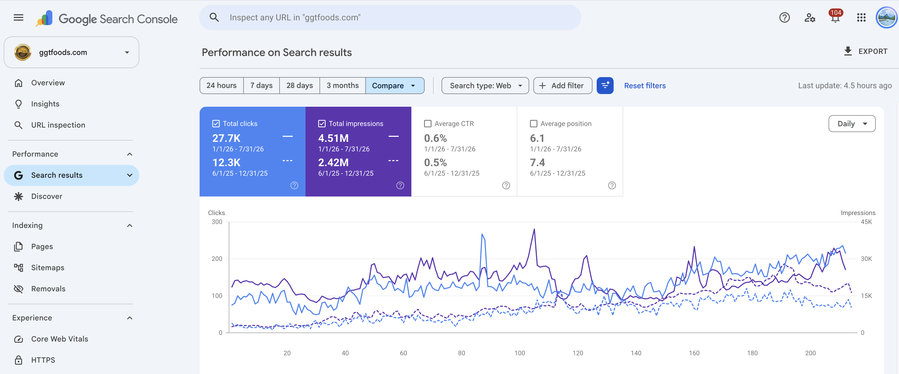
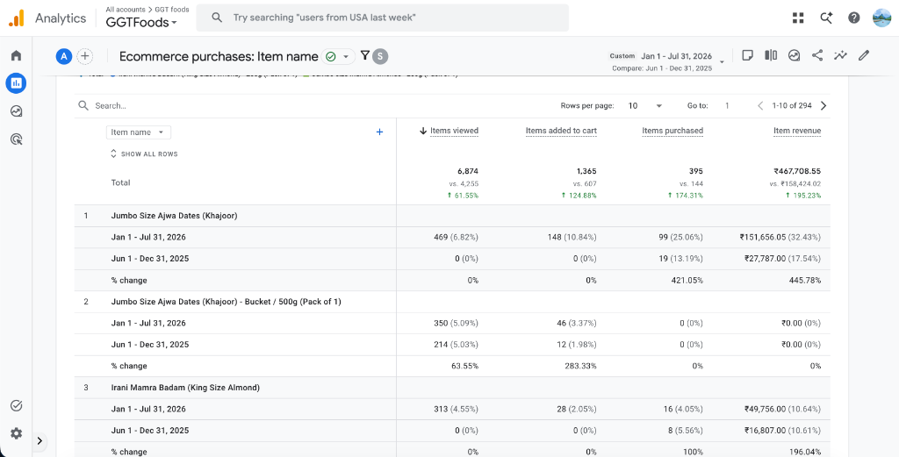
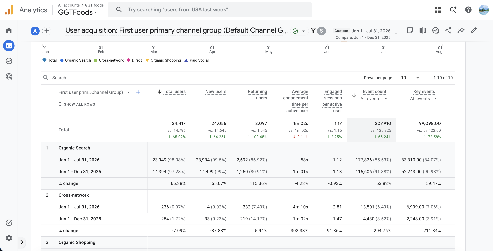

What I Had
When GGT Foods launched their premium dry fruit store in January 2026, they had the right products but the wrong strategy:
-
✖
Invisible Collection Pages Product category pages (dates, almonds, cashews, etc.) weren't ranking for high-intent keywords like "buy premium dates online" or "best dry fruits gift hampers."
-
✖
80% AI-Generated Blogs Articles existed but had no E-E-A-T signals, no clear CTAs, and no connection to products. They were noise, not assets.
-
✖
No Topical Authority Content was scattered across generic dry fruit topics with no depth or strategic focus on categories that actually drove sales.
-
✖
Unoptimized Images Product images lacked alt text, structured data, and SEO metadata. Ecommerce images weren't serving both users and search engines.
-
✖
Missing or Weak CTAs Blog posts ended without directing readers toward gift hampers, bulk orders, or product collections. Organic traffic existed but didn't convert.
What I Did
1. Collection Page Optimization
Rewrote 12 main collection pages (dates, almonds, walnuts, cashews, gift hampers, bulk orders) with content backed by detailed keyword research and competitor analysis.
👉 Target: "buy premium Ajwa dates online", "organic almonds India"
Added Product, AggregateOffer, and Breadcrumb Schema markup for rich snippet display, and built internal links with contextual anchor text from related blog posts.
👉 Focus: Schema optimization & title tag hierarchy
2. Blog Content Audit & Rewrite
Reviewed 80 AI-generated blogs. Kept high-intent posts and rewrote 80 with fresh content featuring scientific E-E-A-T signals, health benefits, proper intros, and strong CTAs. Generated 100 new high-intent articles covering keyword gaps.
👉 Key Post: "How to Store Premium Dates to Retain Freshness"
3. Topical Authority Building
Identified "dates" as the highest-ROI subcategory. Created a date content pillar with 40+ articles (dates benefits, buying guides, bulk orders) and cross-linked them. Built similar clusters for seeds, almonds, versus blogs
👉 Goal: Establish dominance in dry fruits & gifting niches
4. Technical Image SEO
Added descriptive alt text with keyword targets (e.g. "Premium Ajwa Dates 500g bucket") to all product pages. Compressed image assets for speed and implemented lazy loading and ImageObject schema to improve indexation.
👉 Result: Clean Core Web Vitals & image search listings
5. Content Conversion Optimization
Integrated 3-5 contextual CTAs per article. Created comparison guides ("Almonds vs Walnuts") and customized gifting guides linking directly to shop collections. Simplified corporate bulk order forms for mobile screens.
👉 Outcome: Maximize transaction paths from incoming traffic
What Was the Outcome
1. Google Search Console Performance (6-Month Scaling)
Search Visibility Key Insights
Average ranking position improved by **1.3 positions**, lifting the highest-value commercial pages from the bottom of Page 1 (pos 7.4) straight into the active CTR zone (pos 6.1).
This minor positional improvement translated into a massive **+125.2%** increase in click volume as commercial keywords reached prominent rankings.
| GSC Metric | Previous Period | Current Period | Growth |
|---|---|---|---|
| Organic Clicks | 12,300 | 27,700 | +125.2% |
| Impressions | 2.42M | 4.51M | +86.4% |
| Avg. CTR | 0.5% | 0.6% | +20.0% |
| Avg. Position | 7.4 | 6.1 | Improved (-1.3) |
Click to expand Google Search Console click and impression comparison

2. E-Commerce Purchases & Organic Revenue
| GA4 Metric | Previous Period | Current Period | Growth |
|---|---|---|---|
| Items Viewed | 4,255 | 6,874 | +61.55% |
| Items Added to Cart | 607 | 1,365 | +124.88% |
| Items Purchased | 144 | 395 | +174.31% |
| Organic Revenue | ₹158,424.02 | ₹467,708.55 | +195.23% |
Revenue Generation
Improving organic presence didn't just boost impressions—it attracted high-converting buyers. The conversion optimization efforts resulted in a staggering **174.3%** increase in items purchased.
Overall organic revenue climbed from ₹158K to ₹467K+, proving the value of aligning search engine visibility with clear product acquisition paths.
Click to expand verified GA4 Item Revenue and Purchase report

3. Verified Acquisition Channels (GA4 User Acquisition)
Organic Search as the Dominant Channel
Our content cluster structure succeeded. Organic Search drove **23,949 users (98.08% of all acquisition traffic)** between January and July 2026. This traffic also showed excellent engagement signals:
Click to expand verified GA4 User Acquisition Channel Report

4. The Before & After Breakdown
| Optimization Aspect | Before (Dec 2025) | After (Jul 2026) | Improvement |
|---|---|---|---|
| Search Visibility | 2.42M impressions, avg. pos. 7.4 | 4.51M impressions, avg. pos. 6.1 | +86% Imp |
| Organic Traffic | 12.3K clicks/month | 27.7K clicks/month | +125% |
| Product Discovery | 4,255 items viewed | 6,874 items viewed | +61.55% |
| Purchase Intent | 607 add-to-carts | 1,365 add-to-carts | +124.88% |
| Actual Purchases | 144 items sold | 395 items sold | +174.31% |
| Revenue (Organic) | ₹158,424.02 | ₹467,708.55 | +195.23% |
| Content Quality | 80% AI-generated blogs, low engagement | 100% human-written, conversion-optimized | Overhaul |
| Topical Authority | Scattered, generic topics | Deep pillar structure (Dates, Gift Hampers) | Dominance |
| Ranking Keywords | Collection pages invisible on Google | Ranking for 50+ commercial keywords in Top 5 | Top Rankings |
Campaign Summary
Before Execution
- ✖ Collection pages invisible for key commercial queries
- ✖ 80% of blogs AI-generated with no value or E-E-A-T
- ✖ Weak domain authority with generic, shallow topics
- ✖ Product images lacked basic metadata and alt texts
- ✖ Missing calls to action leading to poor sales conversion
After 6 Months
- ✔ Overhauled main categories ranking in top 5 searches
- ✔ 100% human written, medically-grounded blogs with CTAs
- ✔ Dense semantic date and gift hamper content structures
- ✔ All store assets fully indexed with structured alt schemas
- ✔ Compounded store purchases from 144 to 395 sales (+174%)